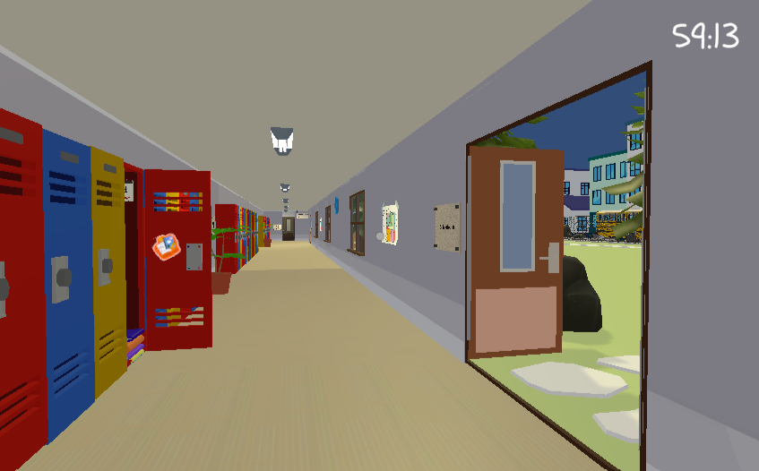

Ik was de developer in ons team, wat inhield dat ik me bezig hield met alle functies in het spel, waaronder de mechanics van de speler, deuren, puzzels etc. Je speelt als een kind die vastzit op school na sluitingstijd. In het spel kun je first person rondlopen en interacteren met veel verschillende objecten in het spel. Het doel is om binnen 1 uur tijd de sleutel voor de uitgang en je vriend die ook ergens opgesloten zit te vinden. Dit doe je door net als in een escape room puzzels op te lossen, die in dit spel gebaseerd zijn op lineare functies.

Afbeelding van de omgeving